The transition of the global energy landscape toward a high-penetration renewable grid has elevated Battery Energy Storage Systems (BESS) from niche ancillary service assets to fundamental pillars of grid reliability and flexibility. As capacity in markets like the United States is projected to surpass 170 GW by 2030, the technical management of these assets over a 10–15-year operational horizon becomes the primary driver of project finance and long-term viability.
This report provides an exhaustive analysis of degradation mechanisms, mathematical modeling paradigms, and technical augmentation pathways required to sustain utility-scale BESS performance across a decade or more of operation.
Electrochemical Mechanisms and the Genesis of Degradation
Battery degradation in lithium-ion systems is an inevitable byproduct of operational chemistry, manifesting as capacity fade and resistance growth. These phenomena are categorized into two concurrent pathways: calendar aging and cycle aging, each driven by distinct environmental and operational stressors.
Calendar Aging and the Solid Electrolyte Interphase
Calendar aging represents the degradation that occurs while the battery is at rest, independent of charge or discharge cycles. The primary driver is the chemical instability at the interface between the electrode and the electrolyte. In lithium-ion cells, the formation of the Solid Electrolyte Interphase (SEI) layer on the anode is a critical initial process.
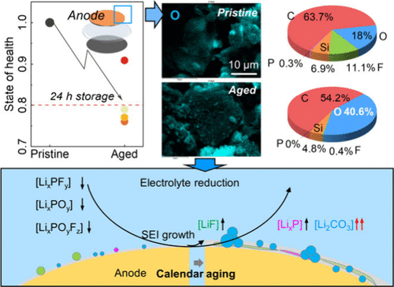
The rate of calendar aging is exponentially sensitive to temperature and linearly influenced by the battery’s state of charge (SOC). Higher temperatures accelerate the kinetics of the side reactions that thicken the SEI layer, while high SOC levels increase the chemical potential difference at the interface, further driving electrolyte decomposition. Research indicates that storing cells at 60°C leads to significantly more severe degradation than at 50°C, illustrating the non-linear impact of thermal stress.
Cycle Aging and Mechanical Strain
Cycle aging occurs during the active transport of lithium ions between the cathode and anode. Every cycle induces mechanical and chemical stress on the electrode materials. Repeated mechanical stress causes the SEI layer to crack, exposing fresh reactive surfaces to the electrolyte, which in turn leads to further SEI formation and additional lithium consumption.
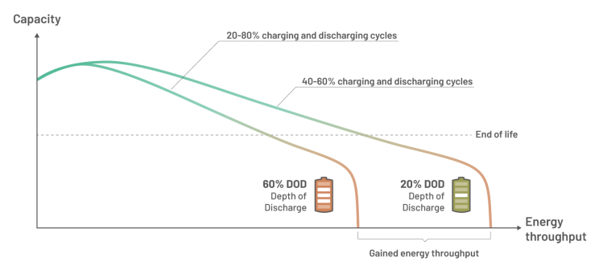
Furthermore, at high charge rates or low temperatures, lithium plating can occur on the anode surface, where lithium ions form metallic lithium rather than intercalating into the electrode structure. This process not only reduces capacity but can also lead to internal short circuits if dendrites penetrate the separator.
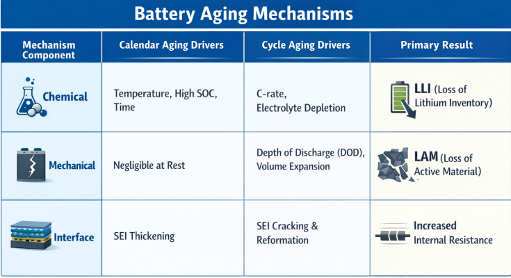
Hierarchical Modeling Paradigms: Accuracy vs. Complexity
BESS planners select from three primary categories of degradation models, each offering a different trade-off between computational burden and predictive precision.
Physics-Based and Electrochemical Models
Physics-based models, such as one-dimensional (1D) or pseudo-2D electrochemical models, describe the internal dynamics of lithium-ion transport, porous electrode kinetics, and concentrated solution theory. These models are stable across a wide range of operating conditions and can achieve error rates of less than 10%. However, they are computationally intensive—up to 4,000 times slower than semi-empirical models—and require extensive proprietary data for parameterization, making them less suitable for the fast-paced simulations required in grid-scale techno-economic analysis.
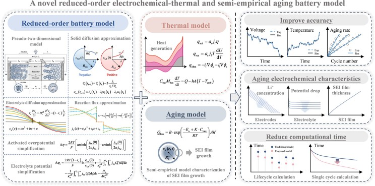
Semi-Empirical and Reduced-Order Models
Semi-empirical models are the current industry standard for long-term project planning. They combine algebraic equations with accelerated aging test data to fit specific degradation trends. While they are highly efficient and easy to implement in financial modeling tools like SAM or SimSES, their accuracy is limited to the conditions of the calibration dataset. Operating outside these boundaries can result in errors as high as 60% in capacity loss prediction.
Machine Learning and Physics-Informed Neural Networks (PINNs)
The advent of large datasets from operating BESS installations has fueled the rise of data-driven models. Neural networks, such as Long Short-Term Memory (LSTM) networks, are used to capture complex, non-linear degradation dynamics that traditional algebraic models might miss. Physics-Informed Neural Networks (PINNs) further enhance this by embedding governing electrochemical equations within the neural network structure, ensuring that the model’s predictions remain physically plausible even when data is sparse. Studies by NREL have shown that machine-learning-assisted models can reduce life-prediction uncertainty by more than a factor of three compared to traditional expert-derived models.
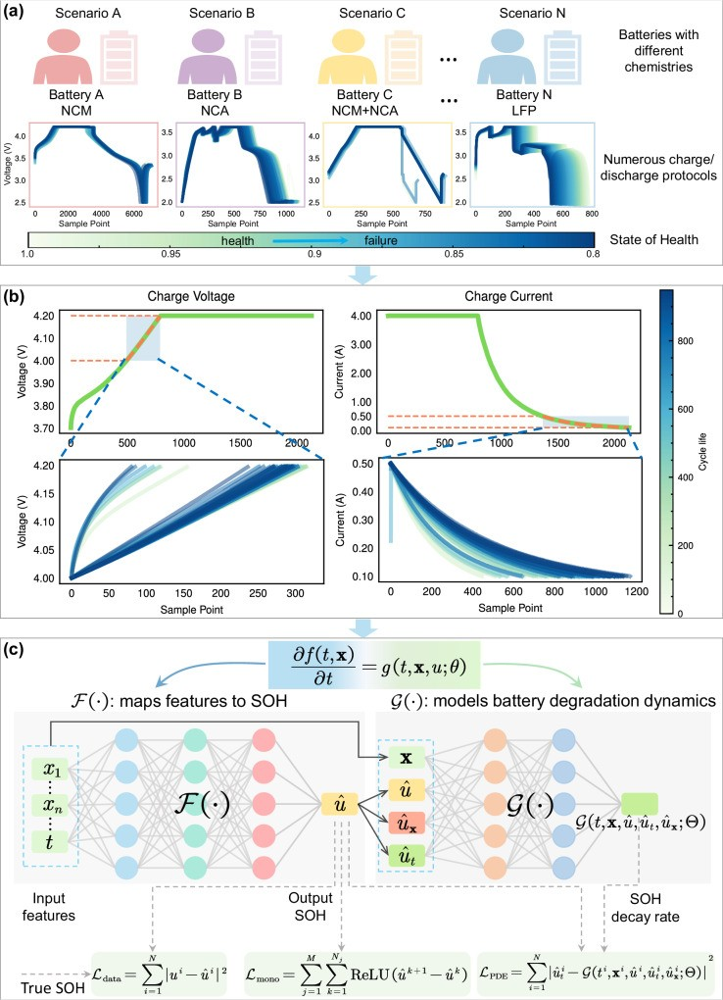
Model CategoryComputational ComplexityAccuracyGeneralizabilityPrimary ApplicationPhysics-BasedVery HighVery HighExcellentCell design, advanced BMSSemi-EmpiricalLowModerateLimited to datasetFinancial proformas, planningMachine LearningModerateHighData-dependentReal-time monitoring, O&MEmpiricalVery LowLowPoorEarly-stage screening
Operational Impact: Climate and Market Dynamics
The actual degradation observed in a 10–15-year project is heavily influenced by the geographic location and the primary revenue stack of the asset.
Tropical Climate Stress: The Thailand Case Study
A detailed study of grid-scale BESS in Thailand revealed that high ambient temperatures can increase capacity degradation rates by 20–60% compared to optimal conditions. Over a 10-year period, capacity declined to 80% at 25°C but dropped to 40% at the highest operating temperature ranges. This discrepancy highlights the necessity of climate-aware modeling, where temperature data is classified into ranges (e.g., <30°C, 30–55°C, and >55°C) to identify specific degradation patterns and optimize thermal management strategies.
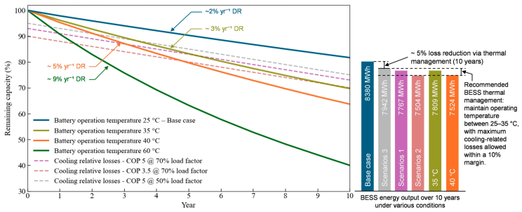
Market-Driven Duty Cycles
The frequency and depth of cycling are dictated by the electricity market in which the BESS operates. In the CAISO (California) market, four-hour duration systems are prevalent to meet Resource Adequacy (RA) requirements and help manage the evening demand ramp. These systems typically undergo deep daily cycles, accelerating cycle aging. In contrast, the ERCOT (Texas) market historically favored one- to two-hour systems optimized for high-frequency ancillary services and price volatility, which may involve many shallow cycles but higher power-to-energy (P:E) stress.
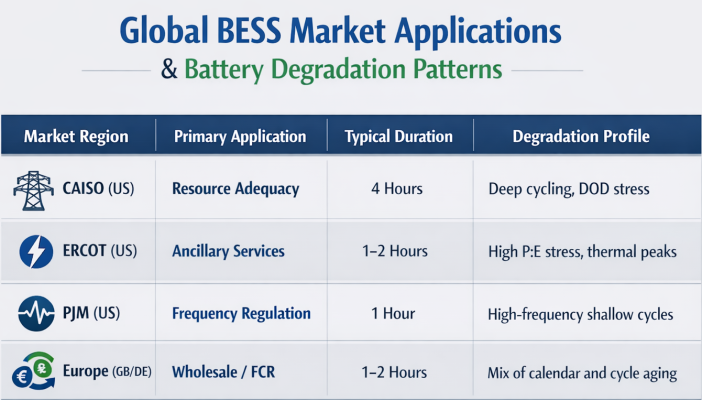
Strategic Augmentation Planning for 10–15 Years
Maintaining the nameplate capacity of a BESS over its 15-year lifecycle requires a proactive augmentation strategy. Augmentation is the systematic addition of new battery modules or racks to offset capacity fade and ensure the system meets its contractual obligations.
Upfront Overbuild vs. Staged Augmentation
Developers must evaluate the economic trade-offs between installing excess capacity initially (overbuild) and planning for periodic additions (augmentation).
Initial Overbuild
An initial overbuild involves installing more batteries upfront than are required to meet year-one demand.
Advantages: Simplifies project execution by removing the need for future site mobilization, labor, and re-permitting. It locks in capital expenditures at the start, providing certainty for project financing.
Disadvantages: Higher initial CAPEX for capacity that will not be fully utilized for years. It also risks underperforming if the degradation rate is lower than expected, leading to stranded capacity that was paid for but never needed.
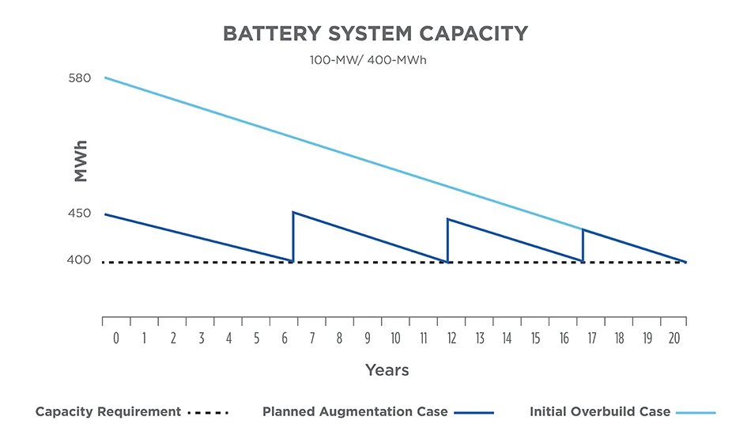
Staged Augmentation (Designed to Augment)
Staged augmentation involves a lean and mean initial build, with physical space and electrical infrastructure prepared for future battery additions.
Advantages: Defers CAPEX, improving the projects Internal Rate of Return (IRR). It allows developers to exploit the declining costs of lithium-ion batteries—which are projected to continue falling by approximately 6% annually post-2025. Furthermore, it enables the integration of newer, more efficient battery technologies as they become commercially available.
Disadvantages: Increased technical complexity in integrating old and new batteries. There is also a risk of manufacturing constraints or shifts in building codes and fire standards (e.g., NFPA 855) that could make future integration more difficult or expensive.
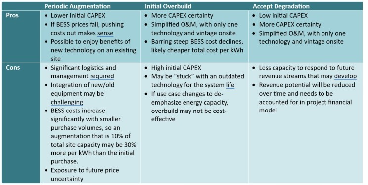
Technical Pathways: AC vs. DC Augmentation
The engineering approach to augmentation is divided into two primary methods: Alternating Current (AC) and Direct Current (DC) pathways.
AC Augmentation: The "New Block" Solution
AC augmentation involves adding a completely independent battery system—including its own battery racks, inverters (PCS), and controls—to the common AC bus of the project.
Mechanism: The new batteries are connected after the existing inverters. This means the original system remains unchanged.
Benefits: It is highly modular and flexible, making it ideal for retrofitting existing sites without significant downtime. It also allows for the integration of different battery chemistries (e.g., adding a sodium-ion block to an existing LFP site) since the systems are decoupled at the AC level.
Drawbacks: It is more costly because it requires additional power conversion equipment and transformers. It also requires more physical footprint and may trigger a lengthy re-permitting process because new grid-connected hardware is being added.
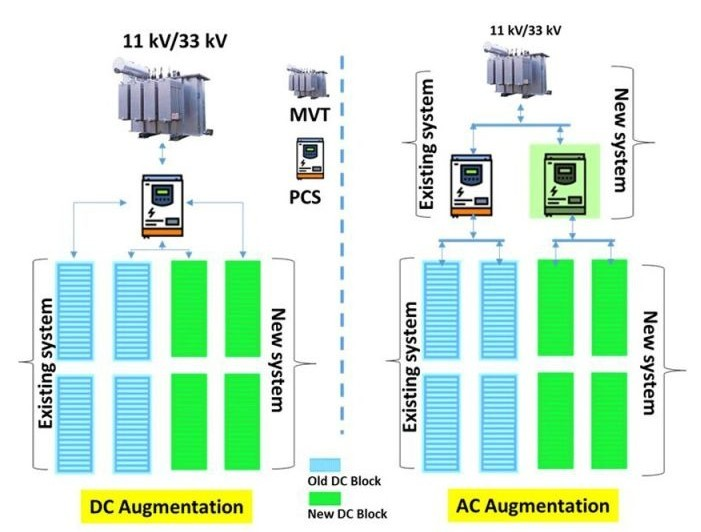
DC Augmentation: The "In-Rack" Solution
DC augmentation adds new battery modules or racks directly to the existing DC bus, sharing the existing inverters.
Mechanism: New capacity is added before the inverter. This can be done via DC Direct connection or DC Shuffling.
Benefits: It is more cost-effective and space-saving, as it utilizes the existing power conversion infrastructure. Because there are technically no new grid connections, it can often bypass the complex permitting process required for AC additions.
Drawbacks: The primary hurdle is the heterogeneity between new and old batteries. New cells have lower internal resistance and higher voltage profiles than aged ones. Connecting them in parallel can cause the new, robust batteries to compensate for the older ones, leading to dangerous current imbalances, inefficient cycling, and accelerated wear on the new units.
Technological Solutions for Voltage Mismatch
To overcome the challenges of DC augmentation, the industry has adopted advanced power electronics that act as buffers between heterogeneous battery strings.
DC-DC Converters and String Optimizers
DC-DC converters, such as those produced by Dynapower (e.g., DPS-500, DPS-1000), are bi-directional building blocks that interface the battery energy storage with the DC bus of a central inverter. These converters enable on-the-fly switching between voltage, current, and power control modes, allowing them to manage the precise output of a battery rack regardless of its state of health.
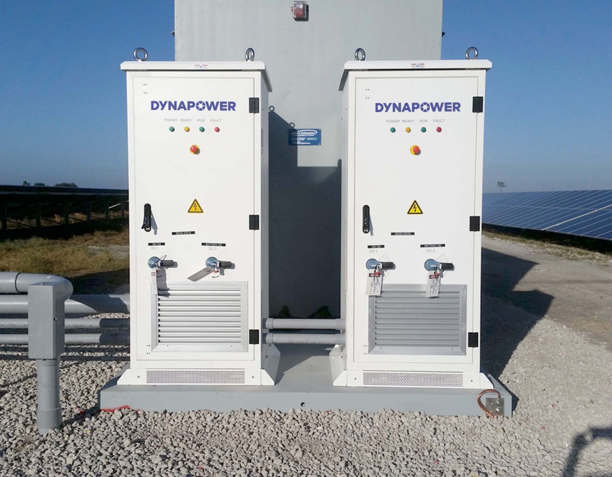
String optimizers, such as those from Ampt or Alencon, perform Maximum Power Point Tracking (MPPT) or voltage mapping at the string level. These devices (e.g., Ampt i50, Alencon SPOT) allow new and old battery strings to operate at their optimal voltage levels while delivering power to a common DC bus at a fixed voltage set by the main inverter. This Direct-to-Battery or Direct-to-Converter technology eliminates the mismatch losses that would otherwise occur when mixing battery generations, potentially saving up to 25% on electrical Balance of System (BOS) costs and increasing overall energy yield.
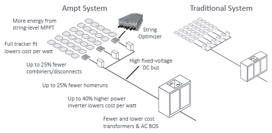
Galvanic Isolation and Safety
Advanced optimizers also incorporate galvanic isolation, which prevents reverse bias from being injected into a PV array or an older battery string in a hybrid setup. This is particularly critical in DC-coupled solar+storage systems where the DC bus is shared between the generation and storage assets. By isolating the strings, the system can maintain safety and reliability even as the individual components age at different rates.
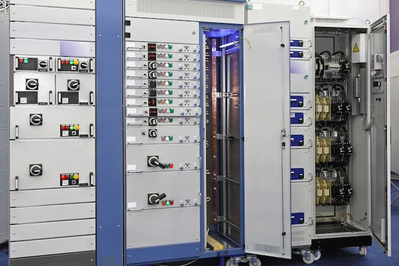
Economic Evaluation: LCOS and Price Learning Curves
The economic allure of augmentation is strengthened by the historical and projected decline in lithium-ion prices.
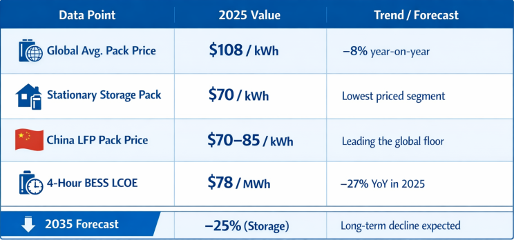
The transition to a commodity-clearing regime post-2025 implies that battery prices will converge toward manufacturing and material floors, with competition between manufacturers like CATL, BYD, and EVE keeping margins thin. For a BESS developer planning a 15-year project in 2025, these curves suggest that augmenting capacity in year 5 or 10 will be materially cheaper than oversizing at the projects inception.
Software Solutions for BESS Asset Management
Navigating the intersection of technical degradation and market optimization requires sophisticated software tools that can model complex scenarios and provide lender-grade financial forecasts.
Simulation and Techno-Economic Tools
- DNV HERO (Hybrid Energy Resource Optimizer): HERO provides market-aware dispatch strategies that honor throughput and interconnection constraints. Its Constraint Designer allows users to set specific cycling caps, and its shadow price lever ensures the battery only cycles if the return exceeds a calculated degradation hurdle rate.
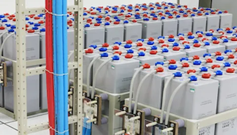
- HOMER Microgrid News : Built on the kinetic battery model, it considers temperature effects on capacity and lifetime, optimizing hybrid systems for technical performance and NPV.
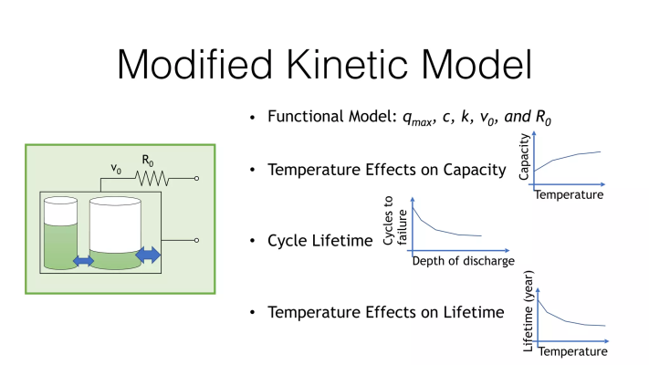
- Energy Toolbase: This platform is widely used for C&I projects, providing accurate bill-savings simulations and AI-driven optimal discharge strategies for demand charge management and arbitrage.
Standards and Regulatory Compliance for Lifecycle Planning
A 10–15 year augmentation plan must also account for evolving safety and grid-connection standards.
Grid-Interconnection: IEEE 2800
The IEEE 2800-2022 standard defines performance criteria for inverter-based resources (IBRs) like BESS. It requires that systems remain connected and support grid stability during voltage and frequency disturbances. For augmentation, this means that any new inverters or PCS added during the projects life must be compliant with the latest frequency ride-through (FRT) and voltage ride-through (VRT) requirements. Models used for compliance analysis (e.g., PSSE or PSCAD) must be validated against actual field behavior under transient conditions.
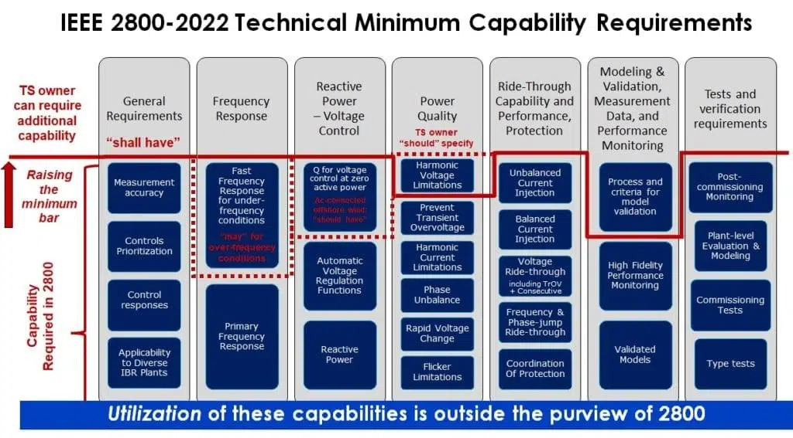
Safety and Fire Protection: UL and NFPA
Safety standards have increasingly standardized to mitigate risks like thermal runaway and fire propagation.
- UL 9540: Covers the safety of integrated energy storage systems and equipment.
- UL 9540A: Provides the test method for evaluating thermal runaway fire propagation.
- NFPA 855: The standard for the installation of stationary BESS, which influences spatial separation and fire suppression requirements.
- IEEE 2686-2024: A recently published recommended practice for Battery Management Systems (BMS) in stationary applications, establishing best practices for hardware and software architectures that protect battery longevity and safety.
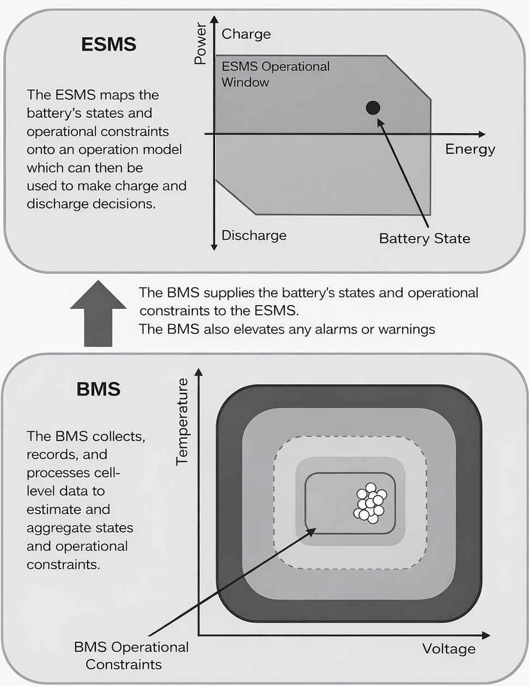
Emerging Trends
Looking beyond 2030, the field of BESS degradation management will be shaped by several emerging trends. The shift from NMC to LFP is already nearly complete in the utility-scale segment, but the first waves of sodium-ion projects are approaching commercialization.

While currently lacking long-term field data, sodium-ion offers potential cost resilience and improved safety at low temperatures. Furthermore, the evolution of hybrid energy storage systems (HESS), which combine high-capacity BESS with high-power assets like superconducting magnetic energy storage (SMES) or flywheels, could allow for better management of rapid power fluctuations, potentially shielding the main battery stack from the high-P:E stress that accelerates cycle aging.